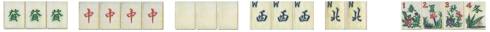
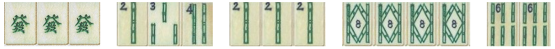
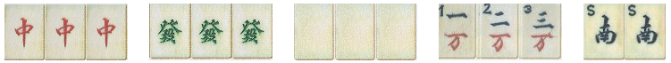

41 MAH JONG HANDS
(As listed in Max Robertson's book, 2007 edition)
1.ORDINARY hand is made up of 4 pung/kong/chow's and a pair. All tiles must be from one suit.
:: clean; form: PKC's (one chow only)
|
|
2.PURITY hand is an ordinary hand with no winds or dragons.
:: super-clean; form: PKC's (one C)
|
|
3.ALL KONGS hand has 4 kongs in one suit with winds and/or dragons and a pair.
:: clean; form: K's
|
|
4.Buried treasure Similar to ordinary hand but cannot pick up discards,
i.e. the hand is entirely concealed. Also must have more than one chow.
:: clean; form: PKC's (2 c's); no discards allowed
|
|
5.MIXED PUNGS is composed of pungs and a pair of mixed suits with winds and/or dragons.
No discards, i.e. entirely concealed.
:: mixed; form Pungs; no discards
|
|
6.ALL HONOUR HAND. Pungs/kongs of 1's & 9's of any suit , winds/dragons plus pair of honours.
(note:- 1's, 9's, winds, dragons are all honour tiles).
:: mixed terminals & WD; form: PK's
|
|
7.Chinese odds. 4 pungs/kongs and a pair; only odd numbers of one suit
:: super-clean (odds) ; form: PK's
|
|
8.Wriggling snake A run of tiles 1 to 9 in one suit only + NEWS + and any one of these 13
tiles to be paired. Last tile picked up can be a discard.
:: clean ; form: run of 9 + NEWS + 1 (matching any of 13)
|
|
9.Sparrow's sanctuary 2 pairs of 1 bamboos + 5 pairs of green bamboos (2,3,4,6,8).
Only the last tile can be a discard.
:: bamboos (1's and greens); form: 11 11 and 5 other pairs
|
|
10.Dragonfly One each of the dragons. A pung/kong of each of the 3 suits plus a pair of any suit.
:: dragons & all three suit ; form: GRW + PK1+PK2+PK3 + any pair
|
|
11.Knitting. 7 pairs of two suits only, all but the last from the wall.
:: two suits - no WD ; form: identical 7-digit numbers in two suits.
eg: 2445689 (in bamboos) and 2445689 (in circles)
|
|
12.Tripple knitting. Four sets of 3 tiles and a knitted pair.
:: 3 suits -- no WD; form: three identical 4-digit numbers, one in each suit.
e.g: 2358 (in bamboos) +2358 (in circles) + 2358 (in characters) + 11 (different suits)
|
|
13.ALL PAIR. Made up of 7 pairs in one suit with winds and/or dragons.
All but the last taken from the wall.
::clean ; form: 7 identical pairs
|
|
14.ALL PAIR HONOUR. Made up of 7 pairs of honour tiles (1, 9, WD).
:: 1's & 9's and WD (mixed suits) & WD ; form: 7 identical pairs ; all but last from the wall
|
|
|
15.ALL PAIR JADE. Made up of a pair of green dragons plus 6 pairs of green bamboos (2,3,4,6,8)
|
|
16.ALL PAIR RUBY JADE. Mde up of a pair of green dragons, a pair of red dragons + 5 pairs of bamboos.
:: bamboos & dragons ; form GG + RR + 5 pairs of bams
|
|
17.HEAVENLY TWINS. Seven pairs of tiles all in one suit; no winds or dragons.
:: superclean
|
|
18.Heavenly paradise. A pung/kong of each of the dragons plus a pung/kong of
the wind of the round when it is the players own wind, a pair of any wind.
A bouquet of flowers must also be held.
:: only WD ; Ordinary ; form:PK for each dragon + PK of own wind + pair of W's
|
|

|
19.Unique wonder. One of each of the honour tiles plus any tile paired.
|
|
20.Lily of the valley. A pung/kong of green and white dragons, 2pungs/kongs of green bamboos (2,3,4,6,8)
plus a pair of green bamboos. All tiles may be punged from a discard.
:: Greens & Dragons; form: PK(green dragons) + PK(white dragons) + 2PK of greens + pair
|
|
21.Imperial jade hand. An all
green hand made up of pungs/kongs of green dragons with pungs/kongs and a
pair of green bamboos and/or a chow if desired.
:: Green Bamboos & Green Dragons ; form:PK of green dragons + 3 PKC of greens + pair of greens
|
|

22. Royal ruby hand. Similar to the jade hand, but this time using the red dragons and red bamboos (1,5,7,9)
:: Red Bamboos & Red Dragons ; Form: PK of red dragons + PKC of red Bams (1,5,7,9)+pair of red Bams
|
|
23.Windy dragons. 2 pungs (not kongs) of any of the dragons plus a pair of each of the winds.
:: WD only ; form: Pd + Pd + WW + SS + EE + NN
(or Pd + Pd + NEWS+NEWS)
|
|
24.Windy ones. A pung/kong of the ones in each suit and one each of the winds plus any wind paired.
:: 1's and W's ; form: 111(circle),111(bamboo),111(chars) +NEWS +any W
|
|
25.Windy nines. Similar to windy ones ,but uses nines of each suit.
:: 9's and W's ; form: 999(circle),999(bamboo),999(chars) +NEWS +any W
|
|
26.Gates of heaven. One suit only no winds or dragons.
All tiles from the wall except the last. 111 + 999 + 2345678 any tiles in 2-8 range
:: super-clean ; form:111 + 999 + run of 2-8 + any in 2-8 range
i.e. 111 2345678 999 + any (not 1 or 9)
|
|
27.RUN, PUNG AND A PAIR. One suit only with no winds or dragons.
Run 1 to 9 , a pung and a pair. All tiles (but last) from the wall.
:: super-clean ; form :123456789 + P + pair
|
|
28.HEADS AND TAILS. Pungs/kongs of 1's and 9's of any of the three suits and a pair.
:: terminals only; mixed suits
|
|
29.ALL WINDS AND DRAGONS. Pungs/kongs and a pair of winds and dragons only, no suit tiles.
:: WD ; PK's and pair
|
|
30.THREE GREAT SCHOLARS. Pungs/kongs of all three dragons plus PKC and a pair.
:: clean ; form:PK of each dragon + PKC + pair i.e.:GGG+RRR+WWW + PKC + pair
|
|

31.THE FOUR BLESSINGS. Pungs/kongs of each of the four winds plus a pair of anything.
:: clean ; form:PK of each wind + any pair
i.e: NEWS+NEWS+NEWS+pair
|
|
|
32.HEAVEN'S GRACE. This hand is when east wind picks up his
original 14 tiles and finds that he hold a Mah Jong. Any Mah Jong hand may apply.
|
|
|
33.Earth's grace. This applies to anyone who is fishing with his original 13 tiles and
picks up the first discard by east wind to go Mah Jong.
Any Mah Jong hand, which allows a pick up from a discard, may apply.
|
|
34.RED LANTERN. Pung/kong of red dragons, pung/kong of own wind, run of 1 to 7
in any suit plus any of the suit tiles (1-7) to be paired.
:: clean ; form:RRR(R) + PK of own wind + 1234567 + one in the range 1-7
|
|
35.RED LILY. A pung/kong of white dragons, pung/kong red dragons, 2 pungs/kongs of
red bamboos (1,5,7,9) and a pair of red bamboos.
:: bams & dragons (red and white)
form: WWW(W) + RRR(R) + 2 PK of red bams (1,5,7,9) and a pair of red bams
|
|
|
36.PLUCKING THE PLUM BLOSSOM FROM THE ROOF.
This is when a player who is fishing for 5 circles picks this up from a
lose tile from the wall to make Mah Jong. i.e that is after making a
kong or picking up a flower (bonus tile).
|
|
|
37.PICKING THE MOON FROM THE BOTTOM OF THE SEA.
This is when a player is fishing for 1 of circles and picks this tile when it is the
last tile on the wall.
|
|
38.RUBY JADE. A pung/kong of red and green dragons, a pung/kong of green bamboos,
a pung /kong of red bamboos and a pair of any bamboo.
:: Bams & dragons (red and green)
form: RRR(R)+GGG(G)+PK of green bams+ PK of red bams+ pair of bams
|
|
39.WINDY CHOWS. A chow in each suit plus one of each wind with any wind paired.
:: EVERY suit + winds ; form: C1+C2+C3 + NEWS + any wind
|
|
40.Gertie's garter. 1 to seven in two suits.
:: two suits ; no WD ; form: 1234567 in two suits (kintting)
|
|
41.GRETA'S GARDEN. A run of 1 to 7 plus one of each wind and dragon.
:: clean ; form:1234567 + NEWS + GRW
|
|
Abbreviations:
P Pung
K Kong
C Chow
PK pung/kong
PKC pung/kong/chow
WD winds/dragons
PK1 PK from suit 1
PK2 PK from suit 2
PK3 PK from suit 3
(1,2,3 are the main suits of bamboo, circle, character)
Clean hand = one suit & WD
Superclean hand One suit no WD
NEWS North wind + East wind + West wind + South wind
G = green dragon
R = red dragon
W = Red dragon
GRW Green dragon + Red dragon + White dragon